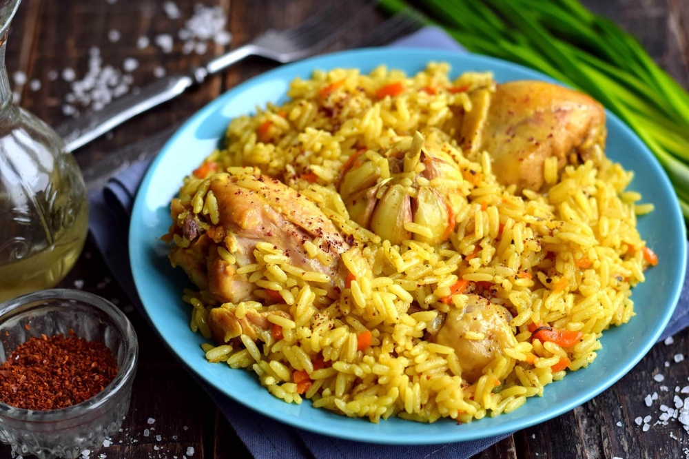

Плов

Описание
Плов - традиционное узбекское блюдо. Приготовить его можно из любого
мяса, но в этом рецепте будет курица. Это домашний способ
приготовления плова на сковороде.
Ингредиенты
- Курица – 500 г
- Рис – 500 г
- Морковь - 500 г
- Чеснок – 1 головка
- Лук репчатый – 1 шт.
- Соль - по вкусу
- Перец черный молотый - по вкусу
- Зира – по вкусу
- Приправа для плова - по вкусу
- Масло растительное (жир) – 120 мл
Шаги приготовления
-
Нарежем мясо кусочками, примерно 2х2 см. Обжарим до золотистого
цвета, на сильном огне, в разогретом масле (курдючном жиру).
Добавим луковицу, порезанную на кубики. Обжарим вместе.
-
Добавляем морковь, нарезанную соломкой. Уменьшаем огонь и тушим
до мягкости. Добавляем специи и соль. (Обязательно используем
зиру, если ее нет в составе готовой приправы для плова.)
Наливаем кипяток, чтобы вода покрывала мясо. Кладем головку
чеснока, очищенную и промытую. Тушим зирвак (подливу) на среднем
огне, до готовности мяса (для курицы – хватит 25-30 минут).
-
Промываем рис до чистой воды, раскладываем поверх мяса и
доливаем кипятка, примерно на 1 см выше риса. Плотно закрываем
крышку, готовим 20 минут.
-
Рассыпчатый плов с курицей готов. Перед подачей достаем чеснок,
затем перемешиваем.